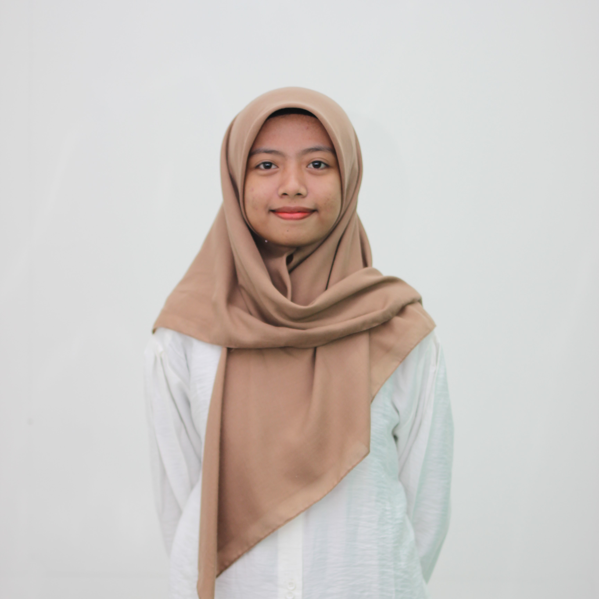
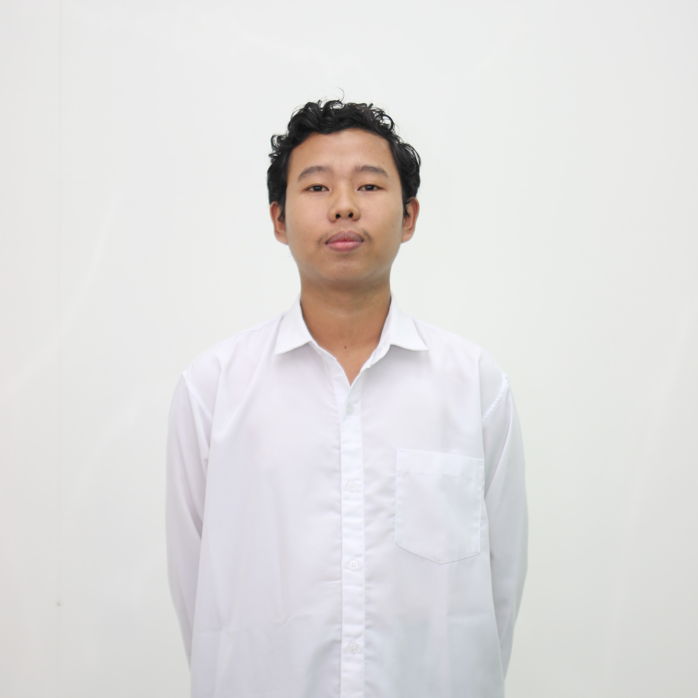

Struktur Keanggotaan Partai Mahasiswa Bersatu
Gustama Dillo Beshieto
Gustama Dillo Beshieto adalah sosok pemimpin muda yang memiliki semangat juang tinggi untuk memperjuangkan aspirasi mahasiswa di seluruh Indonesia. Beliau dikenal sebagai pribadi yang inovatif, berdedikasi, dan memiliki visi besar untuk menciptakan perubahan positif di kalangan generasi muda.
Mewujudkan generasi mahasiswa yang cerdas, berintegritas, dan berdaya saing global, dengan semangat solidaritas, kolaborasi, dan keberlanjutan untuk menciptakan perubahan nyata bagi kemajuan bangsa.
- Meningkatkan Kualitas Pendidikan dan Keilmuan Mahasiswa
- Menanamkan Nilai-Nilai Integritas dan Kepemimpinan
- Membangun Solidaritas dan Kolaborasi Antar Mahasiswa
- Mendorong Partisipasi Mahasiswa dalam Pengambilan Keputusan Publik
- Mengembangkan Gerakan Mahasiswa yang Berkelanjutan dan Berwawasan Lingkungan
- Menghadirkan Mahasiswa sebagai Agen Perubahan Sosial
- Program Beasiswa Mahasiswa Bersatu: Menyediakan beasiswa bagi mahasiswa berprestasi dan kurang mampu melalui kerja sama dengan pihak kampus, pemerintah, atau sponsor.
- Inkubator Inovasi Mahasiswa: Mendukung ide kreatif mahasiswa dengan pelatihan, pendanaan, dan kompetisi.
- Forum Mahasiswa Nasional: Membentuk forum diskusi yang melibatkan mahasiswa lintas kampus untuk bertukar gagasan terkait isu nasional.
- Festival Mahasiswa Bersatu: Menyelenggarakan acara yang memamerkan seni, budaya, dan prestasi mahasiswa dari berbagai daerah.
- Jaringan Alumni Mahasiswa Bersatu: Menghubungkan mahasiswa dengan alumni untuk peluang magang, pekerjaan, atau kolaborasi lainnya.
- Delegasi Mahasiswa ke Lembaga Publik: Mengirimkan perwakilan mahasiswa dalam forum-forum strategis, seperti audiensi dengan pemerintah atau diskusi kebijakan.
- Gerakan Mahasiswa Peduli Lingkungan: Kampanye dan aksi nyata untuk mengurangi sampah plastik, penghijauan kampus, dan program daur ulang.
- Aplikasi Mahasiswa Bersatu: Membuat aplikasi berbasis mobile untuk informasi kegiatan, beasiswa, dan aspirasi mahasiswa.
- Pelatihan Digital dan Teknologi: Memberikan pelatihan dasar coding, desain grafis, dan pengelolaan media sosial untuk meningkatkan daya saing mahasiswa.

Vidya Ayu Novita Sari
Sekretaris Jenderal

Nizma Nabila Shafa Susilo
Ketua Departemen Hubungan Masyarakat
Annisa Intan Sofiyanti
Bendahara Umum
Asqi Syahrul Anwar
Ketua Departemen Pendidikan dan Ilmu Pengetahuan
Rifdah Hanun Alfiyah
Ketua Departemen Sumber Daya Mahasiswa

Khoirunnisa'
Ketua Departemen Seni dan Kebudayaan
Ardita Putri Cahyania
Ketua Departemen Luar Negeri
Wijayaning Dewi Ramadhani
Ketua Departemen Dalam Negeri
Anggertha Nurrosyid
Ketua Departemen Keuangan

Widhi Sri Bhawono
Ketua Departemen Agama
Nabilla Kayla Tsani Putri
Ketua Departemen Riset dan Teknologi
Partai Mahasiswa Bersatu merupakan organisasi politik mahasiswa yang berdiri atas dasar solidaritas dan semangat kolektif untuk memperjuangkan aspirasi mahasiswa di seluruh Indonesia. Dengan landasan kepartaian yang inklusif, partai ini mengedepankan nilai-nilai demokrasi, kolaborasi, dan pemberdayaan generasi muda.
Partai Mahasiswa Bersatu menjalin hubungan antar lembaga berdasarkan prinsip koordinasi, transparansi, dan kolaborasi.
- Dewan Pengurus Pusat (DPP) memimpin kebijakan partai, didukung oleh Dewan Konsultatif Partai (DKP) sebagai pengawas.
- Komite Kampus dan Regional bertugas melaksanakan program di tingkat lokal, berkoordinasi langsung dengan DPP.
- Forum Anggota menjadi wadah bagi seluruh anggota untuk menyampaikan aspirasi.
- Bekerja sama dengan organisasi mahasiswa, institusi kampus, pemerintah, dan media untuk memperjuangkan aspirasi mahasiswa secara luas.
Partai Mahasiswa Bersatu mengusung strategi pemenangan pemilu di wilayah Sumatera dengan pendekatan lokal dan partisipatif, berfokus pada penguatan basis mahasiswa melalui pembentukan tim pemenangan di kampus-kampus strategis, kolaborasi dengan BEM, serta penggalangan dukungan lewat diskusi publik dan kegiatan sosial. Kampanye dilakukan secara hybrid, memadukan media digital untuk menjangkau audiens luas dengan roadshow kampus di kota-kota besar seperti Medan, Padang, dan Palembang. Partai juga menyesuaikan program dengan isu-isu lokal seperti akses pendidikan, digitalisasi, dan pembangunan daerah, guna membangun kesadaran politik mahasiswa dan menciptakan kemenangan yang berbasis persatuan.
Partai Mahasiswa Bersatu mengusung strategi pemenangan pemilu di wilayah Jawa dan Kalimantan dengan fokus pada mobilisasi mahasiswa di kampus-kampus utama, membangun jaringan kolaborasi dengan BEM dan komunitas lokal, serta menyelaraskan program dengan isu-isu spesifik seperti kesejahteraan mahasiswa, akses pendidikan, dan pelestarian lingkungan. Kampanye dilakukan secara intensif melalui media digital, diskusi publik, dan kegiatan sosial yang relevan, disertai roadshow di kota-kota strategis seperti Jakarta, Surabaya, Yogyakarta, Balikpapan, dan Banjarmasin. Dengan pendekatan berbasis isu lokal dan keterlibatan aktif mahasiswa, partai optimis dapat menciptakan gelombang dukungan besar di dua wilayah kunci ini.
Partai Mahasiswa Bersatu menerapkan strategi pemenangan di Indonesia Timur dengan pendekatan inklusif dan berbasis lokal, fokus pada pemberdayaan mahasiswa di wilayah ini melalui kolaborasi dengan BEM, komunitas lokal, dan organisasi kemahasiswaan. Program partai menyoroti isu-isu utama seperti akses pendidikan, pembangunan infrastruktur digital, dan pengembangan potensi daerah. Kampanye dilakukan dengan roadshow ke kota-kota strategis seperti Makassar, Kupang, Ambon, dan Jayapura, serta memanfaatkan media digital untuk menjangkau mahasiswa di daerah terpencil. Dengan memperhatikan kearifan lokal dan kebutuhan spesifik wilayah, partai bertujuan membangun kesadaran politik yang kuat dan solidaritas mahasiswa untuk mendukung kemenangan bersama.